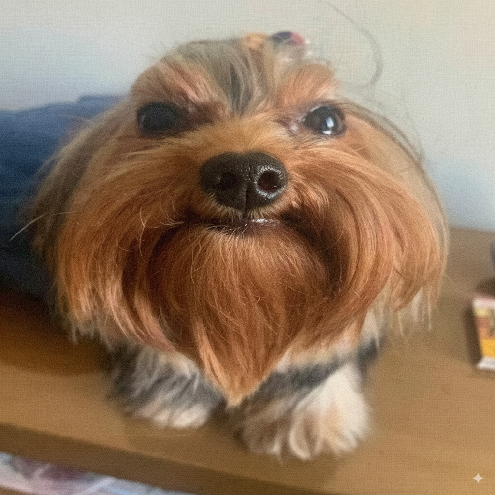

Ad Replacer
ⓘ
Turn on auto-replace or unleash manually!
Auto-Replace Active
Unleash Once!
Dogs Unleashed:
0
×
What's New
v1.3 (Current)
Ruthless zero-millisecond audio muting for YouTube video ads.
Properly exposes native skip boundaries over the dog overlay.
Dominates layout-breaking engagement panel right-sided ads.
v1.2
Extended dog deployment logic to replace standard right-panel YouTube banner visuals while retaining layout.
v1.1
Automated the click process for YouTube's skip ad buttons allowing totally autonomous bypassing.
Added persistent local storage "Dogs Unleashed" counter.
Added toggle switch logic for background observing.
v1.0
Initial framework implementation with active background DOM mutation observer to replace known static ad containers with dog imagery.